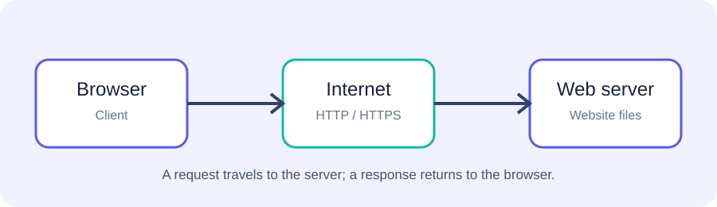

What to learn: Notice that the browser is the client and the remote host responds as a server.
1. Internet and World Wide Web
The Internet is a global network of connected computer networks. The World Wide Web (WWW) is a service that runs on the Internet and lets people access linked pages and resources through a browser. The Internet is the infrastructure; the Web is one way of using it.
2. A short history
The Internet grew from early research networks such as ARPANET. The Web was proposed by Tim Berners-Lee in 1989 and introduced the ideas of URLs, HTTP and HTML. Browsers, search engines, broadband and mobile devices later made the Web widely accessible.
3. HTML and web pages
HTML (HyperText Markup Language) describes the structure and meaning of web content using elements such as headings, paragraphs, links, images, lists and forms. A browser reads HTML and renders the page.
4. HTTP and HTTPS
HTTP (Hypertext Transfer Protocol) defines how a browser requests a resource and how a server responds. HTTPS is HTTP protected by TLS encryption, helping protect data in transit. Common methods include GET to retrieve data and POST to submit data.
5. Email protocols: SMTP, POP3 and IMAP
SMTP (Simple Mail Transfer Protocol) is used to send email between clients and mail servers. POP3 downloads messages from a mailbox, often for local access. IMAP keeps mail on the server and synchronises folders and message status across devices.
6. MIME
MIME (Multipurpose Internet Mail Extensions) extends email formats so messages can contain different content types, such as plain text, HTML, images and file attachments.
7. Domain Name System (DNS)
DNS translates human-friendly domain names such as example.com into IP addresses that computers use to locate servers. It is often described as the Internet's address book.
8. Web browsers and web servers
A browser is client software that requests, interprets and displays web resources. A web server is software and/or a computer that receives requests and sends pages or data back, commonly using HTTP or HTTPS.
Key terms to remember
- Internet: A worldwide network of interconnected networks.
- XML: A markup format for structured, self-describing data.
- RDF: A framework for describing relationships between resources.
Quick revision quiz
Which system translates domain names into IP addresses?